Резонанс напряжений. Резонанс токов. Полная, активная и реактивная электрические мощности. Треугольник электрических мощностей
Резонансом в
электрической цепи, содержащей катушку индуктивности и конденсатор,
называется явление при котором разность фаз напряжения и тока на входе цепи
равна нулю.
Резонансные явления имеют место, как при последовательном, так и
при параллельном соединении катушек индуктивности и конденсаторов. При этом
имеет место два вида резонанса: резонанс напряжений (в последовательной цепи)
и резонанс токов (в параллельной цепи).
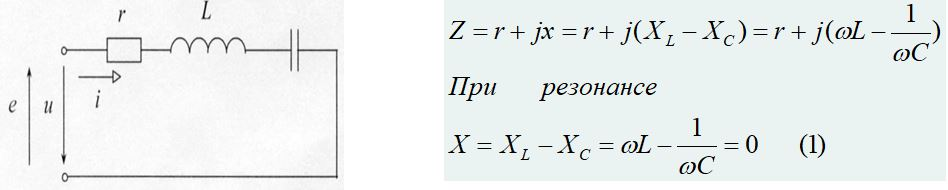
Уравнение (1) - условие возникновения
резонанса напряжений. Т.е. общее реактивное сопротивление цепи равно нулю
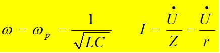 при
резонансе полное сопротивление
цепи минимальное и равно активному
сопротивлению, т.е. z = r; ток в цепи при резонансе будет
максимальным 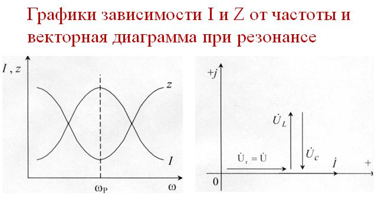 Добротность
последовательного контура Построим треугольник
сопротивлений последовательного контура и найдем сопротивления реактивных
элементов при резонансе 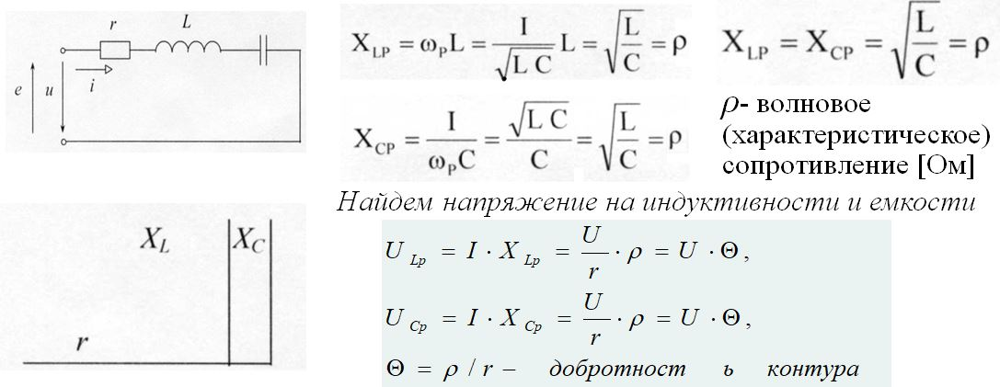 Добротность контура
(коэффициент резонанса) показывает во сколько раз напряжение на индуктивности
ULp или на емкости UCp при резонансе больше, чем напряжение, приложенное к
цепи. Резонанс токов Если к выводам электрической цепи, состоящей из
параллельно соединенных элементов приложено синусоидальное напряжение, то
синусоидальный ток проходящий через эту цепь равен алгебраической сумме
синусоидальных токов в параллельных ветвях (первый закон Кирхгофа) 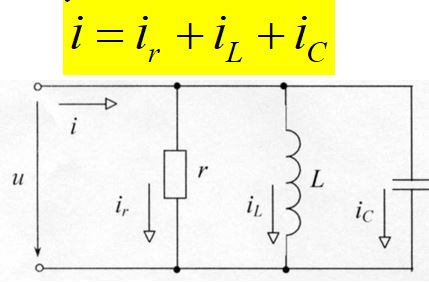
Величина, обратная добротности, называется затуханием и обозначается α.
В радиоаппаратуре, где резонансные явления используются наиболее хорошо,
значение добротности контура равно Θ=5-500.
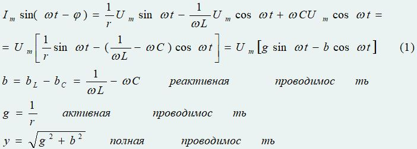
Уравнение (1) представляет собой
тригонометрическую форму записи первого закона Киргофа для мгновенных токов
Явление резонанса в электрической цепи, содержащей параллельно соединенные
индуктивные и емкостные элементы называется
резонансом токов. Согласно определению, резонанс в данной цепи имеет место в том
случае, когда напряжение и ток на входе совпадают по фазе, т.е. тогда, когда
проводимость цепи будет чисто активной. Комплексная величина полной проводимости
Y равна:
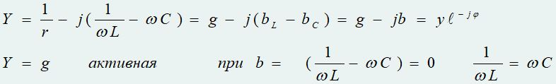
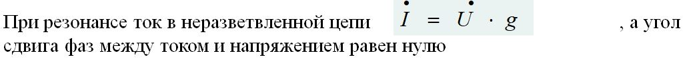
Свойства цепи при резонансе:
- при
резонансе полное сопротивление цепи максимальное, т.к. проводимость цепи
минимальная и равна чисто активной проводимости;
- ток в неразветвленной
части цепи I будет минимальным
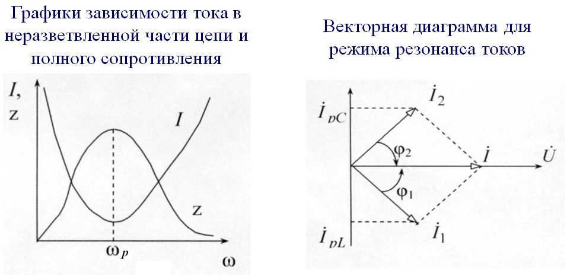
Ток в цепи с L отстает от напряжения на угол φ1 а ток в цепи с C опережает напряжение на угол φ2. Вектор тока I в неразветвленной цепи при резонансе совпадает с вектором напряжения. При этом реактивные составляющие токов IРL и Iрс равны по величине и противоположно направлены
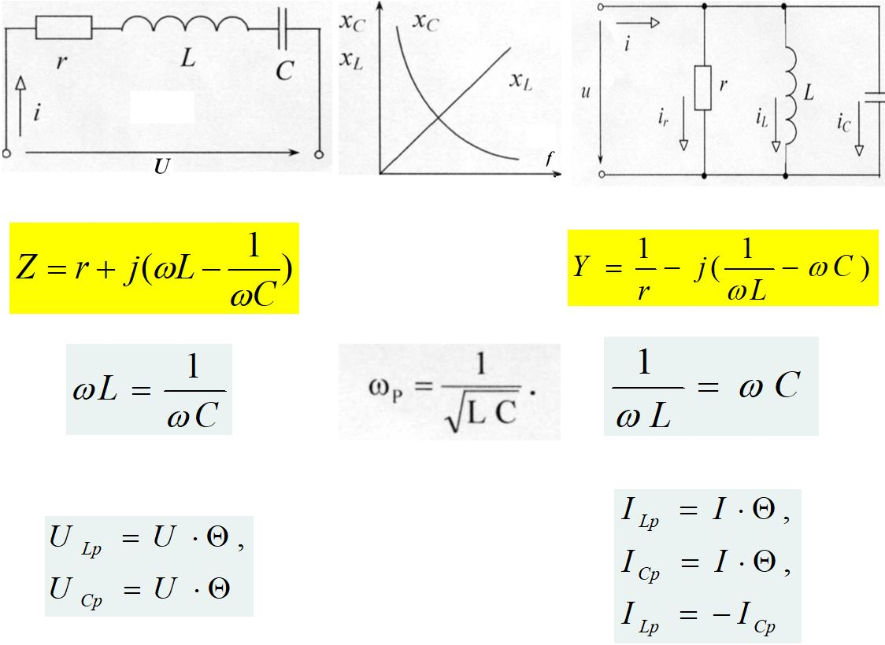
Полная, активная и реактивная
электрические мощности. Треугольник электрических мощностей
Активная мощность
(Р) определяет среднее значение энергии, поступающей в электрическую цепь в
единицу времени и превращающуюся там в тепло или в другие виды
энергии.
Р = UIcosφ
Активная мощность всегда положительна, имеет размерность
[Ватт].
Реактивной мощностью (Q) называют мощность, которая характеризует
интенсивность обмена энергией между источником и реактивными
элементами.
Реактивная мощность рассчитывается по формуле:
Полной мощностью
(S) называется величина, определяемая S = UI и характеризующая мощность
источников переменного тока. Измеряется полная мощность в [ВА].
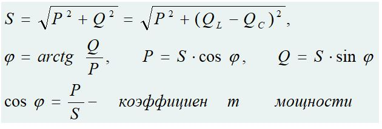
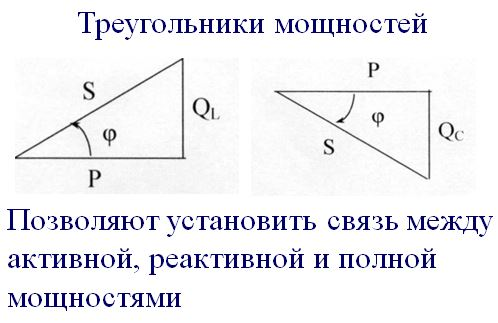